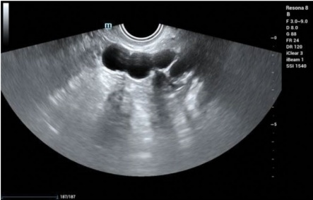
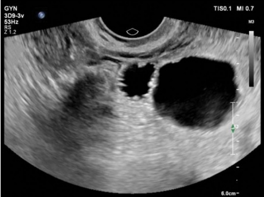
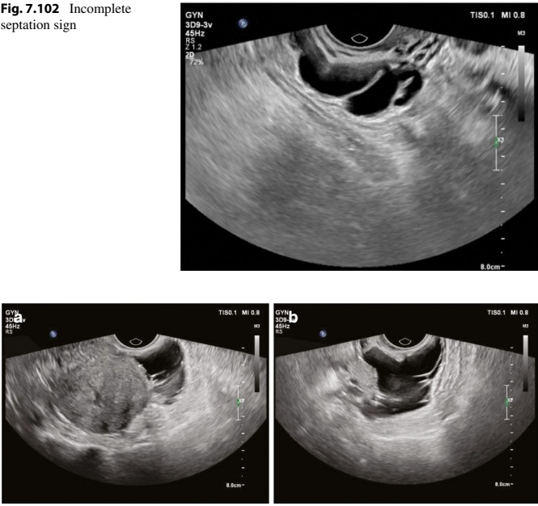
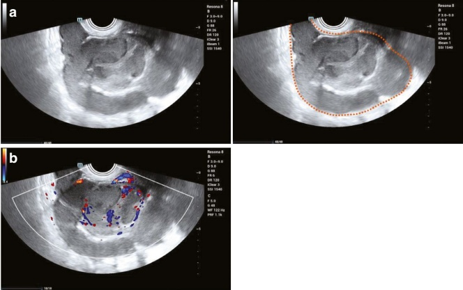
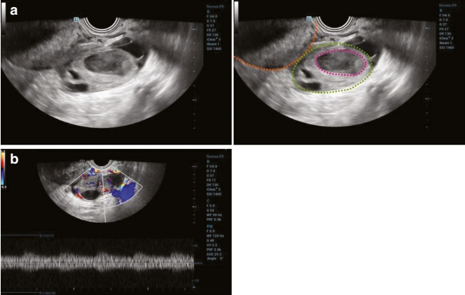
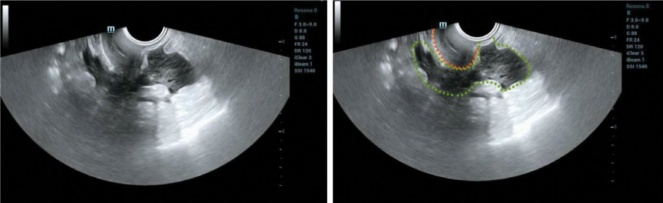
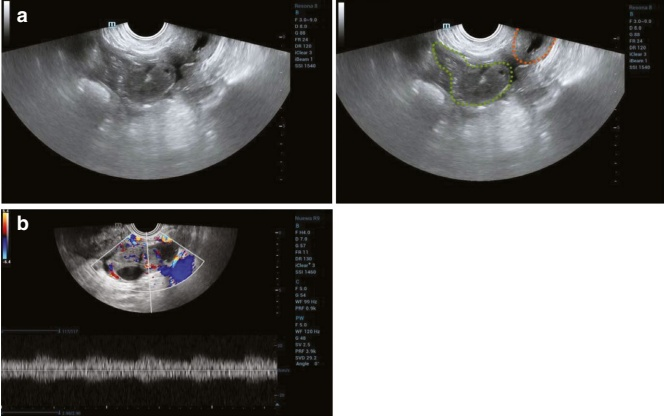
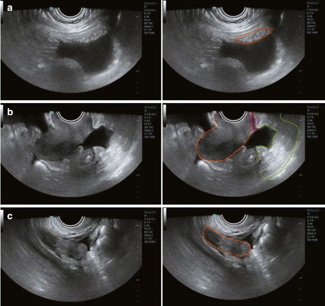

7.4.1 Infectious Diseases of the Fallopian Tubes
1. Hydrosalpinx
(1) Clinical overview:
Hydrosalpinx results from tubal infection or other factors that cause adhesions between the fallopian tube and surrounding tissues, leading to tubal atresia. The subsequent accumulation of serous exudate or resorption of tubal pus transforms the condition into chronic tubal infection [77]. It is most frequently observed in sexually active women.
(2) Clinical manifestations:
Patients commonly present with the following:
• Lower abdominal pain
• Irregular menstruation
• Increased leucorrhea
• Infertility
During gynecological examination, unilateral or bilateral thickening of the fallopian tube with tenderness may be palpated.
(3) Ultrasonographic features:
Visualization of hydrosalpinx on ultrasound depends on the volume of fluid in the fallopian tube. In cases with minimal fluid, it may appear only as a simple tube thickening. When a substantial amount of fluid is present, it manifests as unilateral or bilateral cystic masses adjacent to the uterus. These masses are tortuous and tubular or sausage-like in shape, with clear borders and thick walls. The internal sonolucency ranges from anechoic to low-level echoes, and the ovaries remain unaffected. Color Doppler ultrasound may reveal a few streaks of blood flow signals within the sac walls.
Three characteristic ultrasonographic signs of hydrosalpinx are described in the literature [78–80]:
(a) Waist sign:
A tubular cystic structure with indentations along the walls, resembling a human waist. This feature is observed on the sagittal section of a specific fallopian tube segment and arises from the diameter transition between the wider ampulla and the narrower isthmus of the fallopian tube (see Fig. 7.100).
(b) Cogwheel sign:
In transverse sections of tubular cystic structures in the adnexal region, small bulging echoes (<3 mm) are seen along the inner wall, resembling a cogwheel. This appearance is due to folds in the tubal mucosa and is sometimes referred to as the “beads-on-a-string” sign (see Fig. 7.101).

Fig. 7.101 Cogwheel sign

(c) Incomplete septation sign:
This sign features a septal band originating from one side of the inner wall of a tubular cystic mass, extending toward but not connecting to the opposite wall. This incomplete septation is formed by the folding of two layers of tubal walls along the curvature of the dilated tube (see Fig. 7.102).
(4) Differential diagnosis:
Hydrosalpinx must be differentiated from pelvic encapsulated effusion, which presents as an irregularly shaped fluid collection encircling the uterus or adnexa. This fluid may contain septations; in some cases, the bilateral fallopian tubes are distinctly visualized against the background of the effusion (see Fig. 7.103).
(5) Impact on fertility and treatment principles:
Hydrosalpinx reduces the likelihood of spontaneous pregnancy and can significantly impair the success rates of IVF-ET.
Surgical options: For younger patients with minimal effusion, mild adhesions (not visible on ultrasound), a short duration of infertility, and a strong desire for natural conception, salpingoplasty or salpingostomy may be considered.
IVF-ET recommendation: In cases of severe hydrosalpinx visible on ultrasound, particularly in older patients, IVF-ET is recommended after surgical or medical treatment to address the hydrosalpinx, improving the likelihood of successful implantation and pregnancy.
- Pyosalpinx (tubal abscess) and tubo-ovarian abscess (TOA)
(1) Clinical overview:
Pelvic abscesses encompass a range of conditions, including tubal abscess, ovarian abscess, tubo-ovarian abscess, and abscesses arising from acute inflammation of pelvic connective tissues.

(2) Clinical manifestations:
Patients may present with acute lower abdominal pain or distension, often accompanied by systemic symptoms such as high fever, chills, nausea, and vomiting. Additional symptoms include the following:
- Vaginal discharge: Profuse, purulent discharge, sometimes with a foul odor.
• Urinary symptoms: Frequent urination, urgency, or urinary retention due to the bladder being compressed by the abscess.
• Gastrointestinal symptoms: Diarrhea, rectal tenesmus, or altered bowel habits if the abscess involves or compresses the rectum [81, 82].
Gynecological examination usually reveals
• Discharge: Purulent vaginal discharge is typically observed.
Cervical motion tenderness: A hallmark finding suggestive of pelvic infection.
Mass in the posterior fornix: A tender, palpable mass may be detected, particularly when the abscess is located in a low position within the pelvis.
(3) Ultrasonographic features:
The progression of infection typically follows a sequence: initial thickening of the fallopian tube, formation of a tubal abscess, and eventually, a tubo-ovarian abscess. Pelvic effusion is often present, and probe-induced tenderness is a notable finding during ultrasonography.
(a) Pyosalpinx/tubal abscess:
General appearance: A tortuous, tubular cystic mass with well-defined boundaries located in the adnexal region.
Cystic characteristics: The mass may display incomplete septations with thickened, coarse walls.
Internal echoes: Due to floating pus or debris, the mass often exhibits poor sonolucency [83], along with dense, fine, bright spot echoes or flocculent echoes. These echoes may shift when the probe applies pressure, or the patient changes position.
Signs of gas formation: In cases of infection with gas-producing bacteria, strong echogenic spots, formed by tiny air bubbles, may be visible within the mass.
Adhesions: Ipsilateral ovarian tissue adherent to the mass is commonly seen.
Ovary appearance: In mild ovarian inflammation, the ovary may appear enlarged, with uneven internal echogenicity and a blurred follicular structure, though an abscess may not yet be present.
Color Doppler findings: Stellate blood flow signals may be detected in the cystic wall and septal walls, with more abundant blood flow observed in the ipsilateral ovary (see Fig. 7.104).
(b) Tubo-Ovarian Abscess (TOA):
Along with the findings described for pyosalpinx/tubal abscess, a cystic mass within the ipsilateral ovary is also noted.
Cystic mass characteristics: This mass is typically round or oval with a thick wall, a rough inner lining, and poor sonolucency. Dense, dotted, bright, or flocculent echoes are often visible floating within the mass.
Fusion: Distinction between ovarian and tubal abscesses is challenging as they often merge into a mixed echogenic mass [82].
Color Doppler findings: A few streaks of blood flow signals can be detected within the wall of the mass, septations, and solid areas of the mass (see Fig. 7.105).
(4) Impact on reproductive function and treatment principles:
Both pyosalpinx and TOA may lead to infertility or ectopic pregnancy. The likelihood of infertility rises significantly with the duration of the condition, highlighting the importance of early intervention. For mild cases with minimal pelvic mass, antibiotics may be sufficient. However, in cases

involving large abscesses, drainage or surgical intervention is typically required to prevent further complications and preserve reproductive function.
- Female genital tuberculosis (FGTB)
(1) Clinical overview:
Female genital tuberculosis (FGTB) typically results from primary pulmonary tuberculosis and is most commonly associated with tubal involvement. Tubal tuberculosis is the most prevalent form of FGTB and often presents bilaterally [84].
(2) Clinical manifestations:
FGTB primarily affects women of childbearing age. Due to its chronic nature and the nonspecificity of its symptoms, the condition often presents with the following:
• Abdominal pain
• Distension

Palpable masses
• Infertility
• Menstrual irregularities
However, systemic tuberculosis symptoms, such as afternoon fever and night sweats, are generally absent.
(3) Ultrasonographic features:
The pathologic changes in tuberculous lesions often overlap, and the involvement of multiple organs leads to complex and varied ultrasound presentations.
(a) Fluid accumulation type:
An irregularly shaped dark fluid collection may be seen in the pelvis, often with incomplete septations and lattice-like ascites (fibrous bands within the ascitic fluid) or loculated ascites [85]. Color Doppler ultrasound may reveal blood flow signals within the septations (see Fig. 7.106).

(b) Mass type:
The mass can be classified based on its internal echogenicity into cystic, solid, or mixed cystic-solid. It typically appears as an irregular mass surrounding the uterus, with poorly defined borders and clear adhesions to the surrounding tissues. A solid mass often shows heterogeneous medium-to-high echogenicity, potentially with bright, highly echogenic spots or clusters. A cystic mass is usually characterized by thick walls and small bright echoes within. Color Doppler ultrasound may detect blood flow signals within the solid portion or the cystic wall (see Fig. 7.107).
(c) Mixed type:
This is the most common presentation and involves the coexistence of fluid and mass characteristics. In simple tubal tuberculosis, the affected fallopian tube may appear enlarged, with wall thickening and luminal dilation. The lumen may become hypoechoic, resembling a solid mass due to the filling with caseous matter, although no blood flow signal is typically detected [86]. In cases with tuberculous peritonitis, thickening of the peritoneum and omentum may be observed, sometimes with small nodules (see Fig. 7.108). If endometrial tuberculosis is present, the endometrium may appear thinned with uneven echogenicity, exhibiting multiple strong echogenic spots or patches and/or adhesions within the uterine cavity.
(4) Differential diagnosis:
Tuberculosis of the fallopian tube must be distinguished from ovarian malignancies based on several key differences:
(a) Patient age: Ovarian malignancies typically occur in middle-aged and elderly women, while tuberculosis predominantly affects women of childbearing age.
(b) Mass characteristics: Ovarian malignancies often present as larger masses, with abundant blood flow signals detectable by color Doppler

ultrasound. In contrast, tuberculosis-related masses are generally smaller, with more severe adhesions to surrounding pelvic organs.
(c) Other ultrasound features: In cases of ovarian tuberculosis, there are more distinct septations and a higher frequency of hyperechogenic spots or clusters within the effusion, as compared to ovarian malignancies.
(5) Impact on fertility and treatment principles:
FGTB can cause irreversible damage to the fallopian tubes, endometrium, ovaries, and other reproductive organs. This, combined with immune dysfunction, can result in complications such as infertility, ectopic pregnancy, miscarriage, and ovarian hypofunction [87]. Early-stage FGTB can often be fully treated with anti-tuberculosis medications, while advanced cases may require a combination of anti-tuberculosis therapy and surgical intervention.
